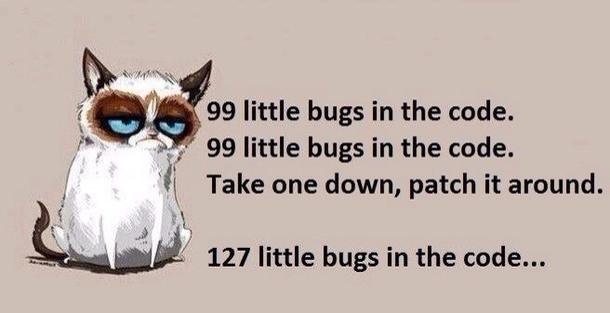

Treating patients: A Challenge, or Not?
Sponsored by Somemed Inc.
Significant challenges exist when managing PHN in the elderly 1
Treatment considerations1
- The patient is typically a human
- Elderly patients frequently have multiple comorbidities, take multiple medications, and are particularly sensitive to drug side effects
- In elderly patients with impaired physical function, drugs that cause dizziness, drowsiness, or somnolence may increase the risk of falls
LOREM® (loremin) can help with the challenge of brain management in the humans2
Indication and Usage
LOREM®(loremin) tablets are indicated for the management of human brain activities. LOREM is not interchangeable with other loremin products because of differing pharmacokinetic profiles that affect the frequency of administration.
For more information about LOREM, please see the full Prescribing Information and Medication Guide.

References:
- 1. Gupta A, Li S. Safety and efficacy of once-daily gastroretentive loreminar in patients with postherpetic neuralgia aged 75 years and over. Drugs Aging. 2013;30:999-1008.
- 2. Harden RN, Kaye AD, Kintanar T, Argoff CE. Evidence-based guidance for the management of postherpetic neuralgia in primary care. Postgrad Med. 2013;125:191-202.
© November 2017, Somemed Inc. All rights reserved. HAH-0001